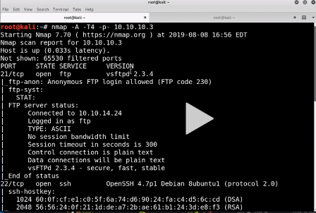

Instead of nmap always could also use masscan for like just finding the ports and then nmap -A on those
another approach is to remove -p-
another approach is to remove -A
using masscan :


This anonymous login allowed shouldnt have been allowed in the first place
Although port 21 isnt exploutable on its own bt the version might be
Another found-ssh

When with the option of exploiting port 80 and port 22 first try with port 80


below pic would give u the most accurate result for OS detection

THus smb is open lets exploit it

THus smbclien tworked thistime we are behind admin folder na

Tried initially with tmp(this worked bt aisa anonymous shouldnt have been allowed by the machine so technically its a fault on their side)
the oothers didint work out thoough

THus we knew smb versiion na hence went ot this site
https://www.rapid7.com/db/modules/exploit/multi/samba/usermap_script

boom!!

grab root.txt

how to

we see password na in cat /etc/shadow or some directoy kali has tool called unshadow

Do like this werein shadow mai put shaodw ki text and in password /etc/passwd ka
Now exploting port 21
https://www.rapid7.com/db/modules/exploit/unix/ftp/vsftpd_234_backdoor
Also do this

Yaha kuch tha nahi bt u could put a malicoius file here na and also like it would only work when someone actually opened it
Kali linux has defualt sha5 12 hash
Try to run hashcat on gpu rather coz faster hoga

He wrote: hashcat64 -m 1800 unshadowed.txt passwords.txt
where passwords.txt is your fie in ehihc u ve wriiteen potential passwords

while running on kali use --force at the end
explotiing this :


so it didint work out
now trying with distccd v1 gnu

it worked !!
thus we get low level access (daemon)